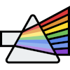
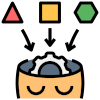
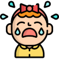

TEIA Que a EITA possui, por analogia, a imagem de um grande guarda chuva, isso é bastante fácil de explicar. Mas abrigar e proteger diversos projetos é apenas um dos conceitos-chave que a Estação emana. Um dos maiores desafios que temos é garantir a integração entre estes diversos projetos e atividades. De forma fluida e consolidada, estas interligações garantem a dinamização das tecnologias ambientais e sociais, que são a força motriz da Estação. Assim, imaginemos as quatro dimensões da EITA e seus oito projetos macro sendo construídos pelos três níveis da aprendizagem por competências. Somemos a isso os vetores convergentes: econômico, social e ambiental, amparando o surgimento do horizonte da Sustentabilidade. As dimensões da EITA são: Educação, Empreendedorismo, Pesquisa e Extensão. Os oito projetos macro são: Farmácia Viva, Horta do Saber, Alfaiataria Social, Alquimia Social, Eclodir, Trilhas, Viveiros e Nascentes. Os três níveis de aprendizagem por competência são: sócio-emocional, científico e técnico. Os vetores convergentes: econômico, social e ambiental. Todos estes fios, em vários planos compões o que chamamos TEIA. TEIA, além de um anagrama da sigla EITA, nos dá a ideia de sustentação, rede, entrelace... E é exatamente isso, que passa a figurar como um grande fluxo de processos integradores de todos estes aspectos e parâmetros. Tecnicamente falando, podemos considerar a TEIA como a metodologia que oferecerá os prcessos de controle, integração e avaliação das atividades da EITA. Sejam estas atividades as ações internas, locais ou mesmo periféricas. Por ações internas, temos por exemplo, os próprios processos administrativos, controles de expediente e mediações e regulações entre os papéis de cada integrante da equipe. Já para ações locais, compreendemos ser todas as atividades que ocorrem na circunscrição espacial da EITA. Já por ações periféricas, temos todas as atividades que ocorrem além de nosso espaço físico e que dependem de uma estreita relação de parceria externa. E, considerando que parceria externa seja qualquer pessoa ou entidade que tenha participação em nossas mediações, formações ou mesmo intervenções. O desenvolvimento da estrutura do que chamamos TEIA, é fundamental para nossa autogestão e será base para o desdobramento indicadores, agandas e regimentos. Objetivos Gerais Integrar projetos e ações; Oferecer à EITA uma visão sistêmica dos processos, internos, locais e periféricos; Oferecer autorregulação de processos e projetos. Garantir que os projetos surjam em sinergia com as dimensões e diretrizes da EITA. Sete Saberes “Todo desenvolvimento verdadeiramente humano significa o desenvolvimento conjunto das autonomias individuais, das participações comunitárias e do sentimento de pertencer à espécie humana”. Edgar Morin  A Educação e suas metodologias não pode escapar de constante atualizações. E, neste tempos acelerados, a lição mais importante que temos que ter em mente é a necessidade de trabalhar os conhecimentos de forma integrada e contextualizada. Durante todo o Séc. XX tínhamos a ampla construção da educação técnica e tecnológica. E isso alavancou a criação de instituições com forte cunho teórico. Hoje, as correntes de demanda de conhecimento estão cada vez mais exigentes. Uma das consequências da globalização neoliberal e o estabelecimento de várias tecnologias sociais em formato digital. Podemos considerar que, com a rápida aceleração da obtenção de informação, as relações sociais baseadas no conhecimento sofreram intensas forças de transformação, chegando ao cúmulo de sugerir que processos de apreensão de conhecimentos beirasse o instantâneo. Edgar Morin (2011), em 1999, definiu as lacunas na Educação e as chamos de "buracos". E na sequência, enunciou "sete saberes" necessários para a educação do futuro. Os "sete saberes" ficaram assim definidos: As cegueiras do conhecimento: o erro e a ilusão; Os princípios do conhecimento pertinente; Ensinar a condição humana; Ensinar a identidade terrena; Enfrentar as incertezas; Ensinar a compreensão; A ética do gênero humano.  O primeiro saber: Segundo Morin, embora as instituições de ensino, no geral, forneçam vários tipos de conhecimento aos seus alunos, poucas ensinam o que é conhecimento. A pergunta norteadora do primeiro saber é: o que é conhecimnento propriamente dito? Para Morin, o conhecimento é uma forma de tradução da realidade e não a realidade em si. Portanto, é passível de viés, erros ou mesmo ilusão de realidade. O segundo saber: Aqui, Morin desenvolve seu pensamento questionando a metodologia das disciplinas. A educação assim alicerçada na fragmentação e não no estudo do todo. Os aluno precisariam ter a visão da totalidade. E isso aponta para um confronto com o complexo, com o contexto. Precisamos pois trabalhar além da forma interdisciplinar ou transdiciplinar, mas adotar uma postura multidimensional. O conhecimento pertinente é aquele que deve estar inserido em um grande contexto e também deve abarcar o que ele considera complexidade. E por complexidade, entende aquilo que diz respeita à união da unidade com a multiplicidade. O terceiro saber: Para Morin, o terceiro saber trata da identidade humana, que é tão indecifrável quanto ignorada. O autor também define que: "o ser humano é parte intrínseca constituinte da humanidade e vice-versa". E mesmo que tenhamos a extrema divisão das disciplinas escolares (chamadas ciências multidisciplinares), todas envolvem o humano. É nítido perceber que mesmo estando imersos em uma sociedade viva e fluida de ações e interesses, também somos indivíduos de uma única espécie (Homo sapiens). A percepção inversa é igualmente válida. Enquanto somos seres pensantes individuais, sem as múltiplas interações dos indivíduos é impossível que a sociedade adquira concretude. Assim, é fundamental que possamos aplicar o estudo da condição humana no máximo de instâncias educacionais possíveis. O quarto saber: Aqui temos que definir melhor o que Morin quer dizer em relação à compreensão. Não se trata da ideia estruturada por Benjamin Bloom (Bloom, 1956) a respeito de uma taxonomia cognitiva nos níveis de aprendizagem, mas muito mais direcionada ao que devemos de fato compreender. Resumindo: a normativa escolar trabalha com os aspectos de compreensão, mas direciona a necessidade de compreender conhecimentos (tradução de realidade). Pouco se trabalha a compreensão da humanidade em nós. E mais, quase nada nos mostra de como compreender uns aos outros.  Um exemplo muito adequado utilizado por Morin é sobre o choro. Para compreendermos a razão do choro, olhar para o externo do que posso ter ferido alguém e investigar as lágrimas em um microscópio ou laboratório químico não soluciona nada. Por outro lado, é necessário entender (compreender) a razão de seu choro, de suas dores e do seu processo emocional. O científico mantém seu valor, mas precisamos atuar em dimensões ao mesmo tempo profundas e abrangentes. O quinto saber: É delicado falar sobre incertezas quando quereos consolidar processos de aprendizagem. Até porque as instituições de educação se comprometem a somente ensinar certezas conceituais e científicas. A questão central deste tópico é que, ao longo da história, vários fatos inesperados, descobertas complementares, vão modificando as nossas certezas sobre diversos temas. Aqui reside a incerteza Aqui já nos encontramos com o pensamento de Karl Popper (Popper, 1959) no que se refere á ilusão, no âmbito do conhecimento. Basta observar a resolução proposta para o chamado Problema da indução e todos os aspectos que envolvem a falseabilidade para teorias científicas. Temos que ter em mente que, para apoiar ou refutar conhecimentos só temos duas ferramentas legítimas: a lógica e o confronto com os fatos. E quando citamos o confrontar com os fatos, nem vamos nos ater à experiencia da visão, por exemplo. Visto que a percepção visual não é apenas uma impressão luminosa na retina, mas toda uma construção e interpretação imagética mental. O sexto saber: Para Morin, o sexto saber é o ensinar a compreensão. mas aqui trata-se de um entendimento de nossa condição planetária. É evidente que os processos de globalização estão absolutamente consolidados neste início de século XXI ganha impulso com a expansão mercantilista no século XVI. A grande dificuldade de se compreender nossa condição planetária reside no fato de que temos também urgência em compreender os aspectos: econômico, social, ambiental, ideológico... Todeos altamente interrelacionados. O sétimo saber: Este saber é nomeado por Morin como sendo antropo-ético. E a mais fiel imagem deste saber está na democracia. Isto porque, é na democracia que o indivíduo exerce sua influência ativa na sociedade. Mas, reconhecendo também que não existe democracia absoluta, temos que reorçar a ideia de atuação cidadã. Assim, as responsabilidades individuais irão ser colocada na perspectiva da consicência social. Referências Bloom, Benjamin S. Taxonomy of Educational Objectives (1956). Published by Allyn and Bacon, Boston, MA. Copyright (c) 1984 by Pearson Education. MORIN, E. Os sete saberes necessários à Educação do futuro. São Paulo: Cortez; 2011. Popper, Karl, The Logic of Scientific Discovery, Basic Books, New York, NY, 1959.